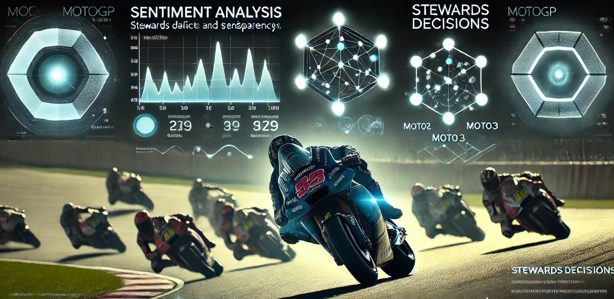
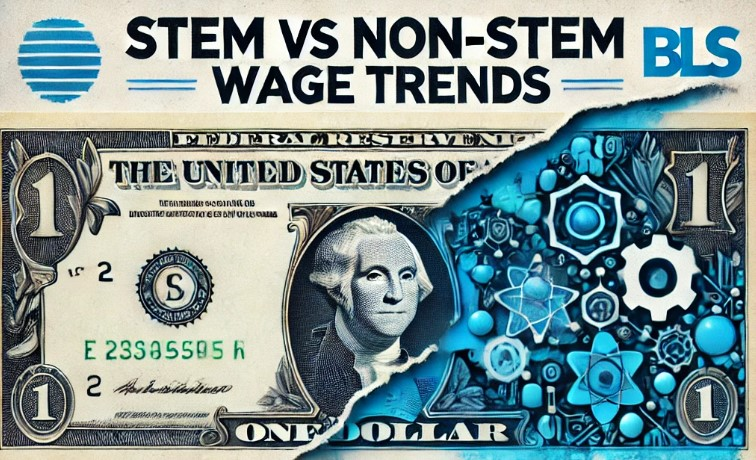

A Case of iLink University
SAS Hackathon 2024

In the evolving landscape of higher education, building a fair and inclusive admissions process is essential. This project confronts one of academia's most pressing challenges: creating a genuinely merit-based system that embraces both diversity and excellence. Powered by advanced analytics in SAS Viya and Python, this analysis uses specialized assessment tools to reveal and address disparities in the admissions process. By examining key applicant attributes and decision criteria, the project uncovers patterns that may unintentionally affect fairness, providing universities with data-driven solutions for more equitable admissions outcomes.
Our findings empower universities to make data-driven, equitable decisions, reducing disparities linked to race, gender, and legacy status. With actionable insights and innovative recommendations, this project establishes a new standard for ethical AI in admissions, paving the way for a future where every applicant is evaluated on a level playing field.
A Case of Hospital Stay Duration Analysis for NHS
In today’s healthcare environment, effective resource management is crucial. This project addresses one of the NHS's key challenges: optimizing patient flow and reducing costs while maintaining high standards of care. Utilizing advanced predictive analytics in Alteryx, this analysis examines patient demographics, surgical procedures, and recovery patterns to accurately forecast hospital stay durations for back surgery patients.
These insights enable hospitals to better anticipate patient needs, optimize staffing, bed availability, and recovery planning, leading to improved operational efficiency and enhanced patient outcomes. The project provides actionable, data-driven recommendations to support the NHS in making informed resource allocation decisions and delivering higher-quality care.
An Analysis of 2022 Rulings and Stakeholder Sentiment

Consistency and transparency in decision-making are critical in maintaining fairness in competitive sports. This project examines the MotoGP Stewards Panel’s rulings during the 2022 season, focusing on the consistency of penalties and the transparency of the decision-making process. Through a combination of data analytics and sentiment analysis, the project evaluates key decisions across MotoGP, Moto2, and Moto3, identifying patterns in rule enforcement and how stakeholders—riders, teams, media, and fans—responded to these rulings.
Using tools like Python and BERT for sentiment analysis, the findings reveal inconsistencies in penalties across circuits and racing classes, raising questions about fairness. The project offers actionable recommendations to help MotoGP standardize penalty guidelines, improve communication with stakeholders, and enhance rider education, ultimately fostering greater trust and transparency in steward decision-making.
Comprehensive Review of Wage Trends Across the United States

Understanding wage dynamics is essential for informed policy and workforce development. This project analyzes wage trends across STEM and Non-STEM occupations in the U.S., using data from the Bureau of Labor Statistics. The study explores regional wage disparities in Metropolitan Statistical Areas (MSAs) and examines the influence of economic factors such as GDP growth and inflation. Using Alteryx for data preparation and predictive modeling, the project provides a comprehensive view of wage differences, offering insights for policymakers, educational institutions, and industry leaders.
The findings reveal that STEM occupations consistently command a wage premium over Non-STEM roles, with significant regional variations. Educational attainment plays a critical role in determining wages, with higher degrees correlating positively with pay in STEM fields. The project identifies economic indicators, such as inflation, which significantly impact wage trends. Actionable recommendations focus on promoting STEM education, targeting regional economic growth, and aligning workforce policies to ensure a well-prepared labor market in high-demand STEM occupations.
Data-Driven Insights for Product Portfolio, Regional Performance, and Customer Engagement
This project applies descriptive analytics to retail data from Superstore to uncover strategic insights that enhance product portfolio optimization, regional market performance, and customer engagement. Leveraging Python for data manipulation and visualization, the analysis focuses on identifying key trends in sales, profitability, and customer behavior. The insights generated enable the Superstore to refine its product offerings, create targeted growth strategies for high-potential regions, and design personalized customer engagement plans, driving overall profitability.
By segmenting customers based on purchasing patterns and evaluating the impact of discounts and seasonal sales trends, this project delivers actionable recommendations to boost customer satisfaction, maximize profit margins, and improve resource allocation. The analysis prioritizes the Technology category and highlights growth opportunities in underperforming regions, providing data-backed strategies to enhance the Superstore's competitive advantage in a dynamic retail market.